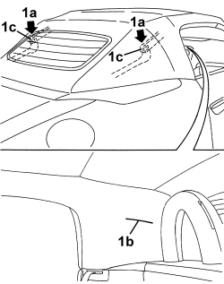
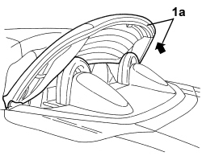
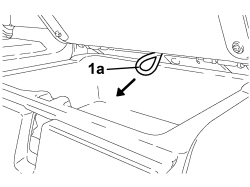
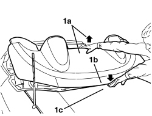
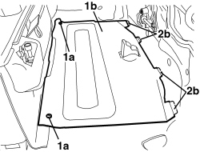
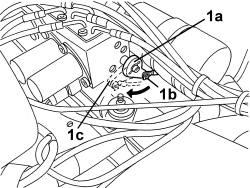
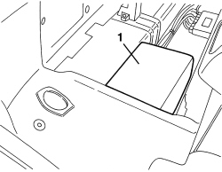
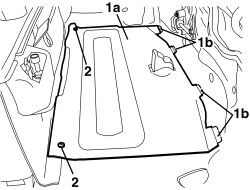

Applies to: engines: 2.2 JTS, 3.2 JTS; all production periods
REACTIVATING THE RELEASE VALVE
1. Release the 5th arc from the hood compartment cover, applying manual pressure, from the top downwards in the areas (1a) of the hood outer fabric, by the side references (1b) on the hood inner fabric (this operation allows the compression on the inner levers joint (1c) making them overcome the dead lock and thereby release the 5th arc).

Applies to: engines: 2.2 JTS, 3.2 JTS; all production periods
1. Raise the hood 5th arc (1a) slowly until it is in the end of travel, vertical position.

Applies to: engines: 2.2 JTS, 3.2 JTS; all production periods
1. Open the boot lid by pulling the emergency control (1a) after having opened the oddments compartment behind the left seat.

Applies to: engines: 2.2 JTS, 3.2 JTS; all production periods
1. Working at the front of the boot, pull the handle (1a) and open the flap (1b).
Applies to: engines: 2.2 JTS, 3.2 JTS; all production periods
1. Take the spanner (1a) and the screwdriver (1b) that are supplied.
2. Insert the spanner (1a) in the hexagonal socket located inside the opening (1c) then, with the help of the screwdriver (1b), turn the spanner (1a) clockwise until it is in the end of travel position (about 90°) to open the hood housing compartment cover locks.
Applies to: engines: 2.2 JTS, 3.2 JTS; all production periods
- Close the boot lid completely.
1. Carefully open the hood housing cover (1a) manually until it is in the end of travel (vertical) position.

Applies to: engines: 2.2 JTS, 3.2 JTS; all production periods
1. Rotate the hood housing compartment floor covering (1b) retainers (1a), then release them.
2. Remove the trim (1b) releasing the retainers (2b).

Applies to: engines: 2.2 JTS, 3.2 JTS; all production periods
1. Remove the hydraulic control unit sound insulation cover.
Applies to: engines: 2.2 JTS, 3.2 JTS; all production periods
1. Reactivate the release valve by manually rotating the lever (1a) from position (1b) to the end of travel position (1c) forcing it gently into this position.

Applies to: engines: 2.2 JTS, 3.2 JTS; all production periods
1. Reposition the hydraulic control unit sound insulation cover.

Applies to: engines: 2.2 JTS, 3.2 JTS; all production periods
1. Position the hood housing compartment floor covering (1a) attaching the retainers (1b).
2. Rotate the covering retainers and attach them.

Applies to: engines: 2.2 JTS, 3.2 JTS; all production periods
- If the hood opening/closing system is not faulty, complete the hood opening or closing cycle using the electric control.
- If the hood opening/closing system is faulty, proceed with the fault diagnosis using the Examiner.
Topics that link to this page (64)
Q007 THE HOOD DOES NOT WORKfault diagnosis table (symptom -> numbered test steps) · engines: 2.2 JTS, 3.2 JTS; all production periods; only with equipment: Spider
X013 HOOD SYSTEM FLUID LEAKfault diagnosis table (symptom -> numbered test steps) · engines: 2.2 JTS, 3.2 JTS; all production periods; only with equipment: Spider
7030H20 HOOD FRONT PANEL - R.R.repair procedure (removal / refitting; the operation number is the code) · engines: 2.2 JTS, 3.2 JTS; all production periods
7030H21 HOOD INNER LINING - R.R.repair procedure (removal / refitting; the operation number is the code) · engines: 2.2 JTS, 3.2 JTS; all production periods
7040H73 ROLL BAR LOWER TRIM - R.R.repair procedure (removal / refitting; the operation number is the code) · engines: 2.2 JTS, 3.2 JTS; all production periods; only with equipment: Spider
7055B20 ROLL BAR, LEFT OR RIGHT - R.R.repair procedure (removal / refitting; the operation number is the code) · engines: 2.2 JTS, 3.2 JTS; all production periods; only with equipment: Spider
7065C96 REAR WIND STOP - R.R.repair procedure (removal / refitting; the operation number is the code) · engines: 2.2 JTS, 3.2 JTS; all production periods; only with equipment: Spider
7210B71 BACKREST REAR PARTITION - R.R.repair procedure (removal / refitting; the operation number is the code) · engines: 2.2 JTS, 3.2 JTS; all production periods; only with equipment: Spider
7210E46 HOOD HOUSING COVER - R.R.repair procedure (removal / refitting; the operation number is the code) · engines: 2.2 JTS, 3.2 JTS; all production periods
7210E54 R.R. BOOTrepair procedure (removal / refitting; the operation number is the code) · engines: 2.2 JTS, 3.2 JTS; all production periods